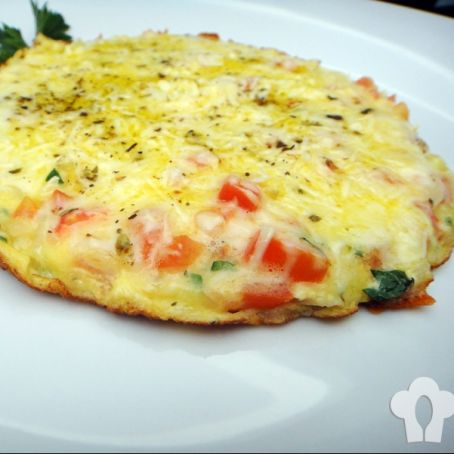

Bata os 2 ovos, pode ser na batedeira ou não. Após ter batido bem, coloque-o na frigideira já untada com óleo, acrescente o sal, o presunto picado em quadradinhos e as duas fatias de queijo (não precisa picar o queijo). Coloque os temperos a gosto, espere ficar firme, e vire o omelete. Está pronto um omelete delicioso, bom apetite!
Quando você for comprar a batata, procure se informar se ela é do tipo seca - na feira, os vendedores sabem dizer com precisão. Lave muito bem a casca das batatas sob água corrente, esfregando uma escovinha limpa. Descasque as batatas e coloque numa panela ou tigela com água (isso evita que as batatas oxidem e escureçam em contato com ar). Depois de descascadas, escolha a maneira que você quer cortá-las: pode ser em palitos grossos ou finos, rodelas, chips, em cubinhos, etc. O importante é que o corte seja uniforme. Coloque o óleo em uma panela de paredes altas e leve ao fogo para aquecer. Coloque um palito de fósforo no óleo para saber quando se ele está no ponto. Quando o palito ascender, retire-o da panela com uma escumadeira. Seque as batatas em um pano de prato limpo e coloque-as dentro da panela com óleo. Mexa ligeiramente para que elas não grudem. Em seguida, pare de mexer e deixe fritar. Essa primeira etapa estará pronta quando as batatas estiverem esbranquiçadas e macias. A intenção é que elas apenas cozinhem. Retire as batatas da panela com uma escumadeira e coloque-as para escorrer em um prato forrado com papel-toalha. Essa etapa pode ser feita com bastante antecedência, deixando para fazer a segunda etapa na hora que a refeição for servida. Para fazer a segunda etapa, volte a aquecer a panela com o mesmo óleo. Utilize o palito de fósforo para saber se o óleo está quente. Quando o palito ascender, retire-o da panela e coloque as batatas na panela. Mexa ligeiramente para que não grudem. Pare de mexer e deixe fritar até que elas fiquem bem douradas. Esse método deixará as batatas muito crocantes por fora e bem macias por dentro. Retire as batatas da panela com a ajuda de uma escumadeira e coloque-as para escorrer em um prato forrado com papel-toalha. Tempere com sal a gosto e sirva imediatamente.